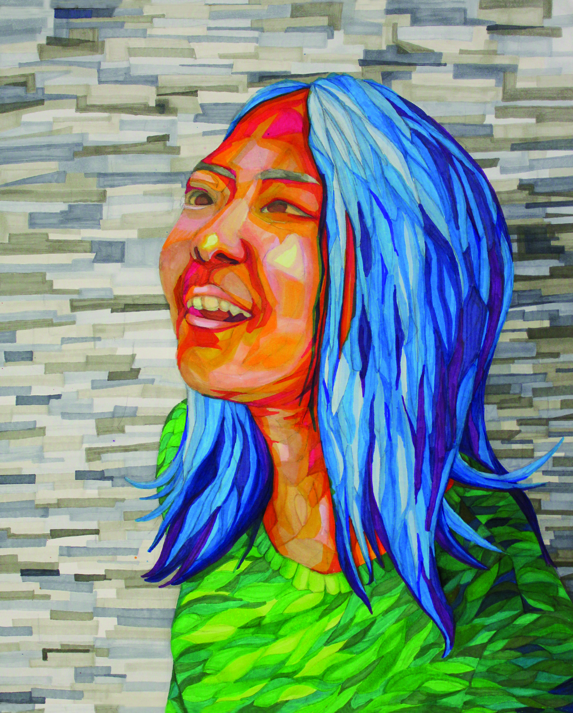

Portfolio
Through art, I am able to share my views, feelings, and opinions on certain topics. I want to share not only my talent, but a message through the use of visual symbols. While my portfolio contains object and architectural observations, overall, it focuses on two themes: memories and obsessions. My memories are a reflection of my family and myself and the emotions I felt. To me, these memories brought a range of emotions from happiness to disappointment. But also, it shows my personal journey to who I have become.
My other focus has been on obsessions and addictions. While all addictions are not bad, the addictions I focus on are prevalent in teenagers, such as social media, beauty, phones, stress, etc. As a teenager myself, I also struggle with some of these addictions and I hope others can learn about some of the dangers of these addictions. With art, I am able to show people the whirlpool effect of these addictions, sucking us into the darkness. By using different types of media, like glass and water bottles, I can emphasize the meaning of the painting. In addition to using different media, I created a series of pieces that told a story, portraying societal pressures.
With this portfolio, I am able to show my personal journey as well as the dangers of certain obsessions.
Artwork Pieces

Before starting a piece of work, I prepare my paints, palette, brushes, and water. Preparing these materials has become a ritual for me. By drawing the observation of my preparations, I want to display all the material I use as well as the amount of thought put into choosing each. Though it may be messy, preparing the materials before the piece allows me to carefully pick and choose. While this piece displays my setup and preparation, other artists may use different materials and tools to create their masterpieces.

My backpack is always heavy as if I am carrying tons of rocks. When I come home, I always empty my backpack. I would pull out binders, folders, writing implements, pencil case, etc. The list is endless and it’s as if my backpack is like Mary Poppins’ bag. I drew the many possessions in my school backpack to depict the items that a student carries. At school, students receive piles of assignments and papers that are all stuffed into their backpack, making their backpack even heavier and full of supplies. With this piece, I wanted to show all the materials students carry in their backpack once they come home.
- 
Whenever I am feeling down, I think of a bright memory or thought that will help me feel better. Bright thoughts allow people to feel a burst of happiness. I wanted to create a piece that reflects my happiness and can brighten another person’s day. By using colorful Copic markers and different shapes, I am able to create a unique, colorful piece. The colorful tones of the piece alone can make someone else feel warmth. As a result, I want others to know that even during tough times, it is important to think back to a happier moment.

Every morning when I wake up, I end up with messy hair due to my improper sleeping position. My sleeping reflects my personality. I am seen as calm and nice, but sometimes, I am energetic and crazy. The leaves around my face represent the serenity of my personality and how relaxed I feel. My hair is tangly and scattered around my face, displaying how sometimes I am “messy” and can be chaotic at times. Like me, many people hide their inner craziness and only show what is socially acceptable: well behaved, elegant, and calm.

When I was little, I would always get a temporary tattoo from my grand uncle. I would normally get butterflies and unicorns, but this time, I decided to get an American star. With that tattoo, I became very prideful for our country and became a significant memory to me. In addition to the American star, a Korean fabric cloth called bogaki was added to the background. This bogaki displays the representation of my Korean culture and another piece of my identity. This piece represents both of my cultures as a Korean American.

A girl’s journey starts here: surrounded and tangled with makeup products. The girl is laying calmly on the hardwood floor. However, her hair begins to hold onto different makeup products, indicating that makeup is starting to become a part of the girl. Her reliance and obsession are beginning to form. Many women are also unaware of the reliance they can develop from makeup. Makeup is only the start of beauty obsession. My piece foreshadows the negative effects makeup can have on a person’s perception of beauty.

After relying on makeup for so long, some women turn to plastic surgery to shape and fix their facial features to become “beautiful.” However, plastic surgery is only an expensive solution that many can regret. In this piece, the girl has a dream about being in a surgery. Multiple gloved hands holding surgical tools are hovering around her already marked face, emphasizing the areas of her face that need fixing. I decided to draw the piece on a plywood panel for the bumpy texture to add to the imperfections and roughness of the girl’s face. Women are willing to put themselves through pain to become “beautiful,” but instead, I want them to focus on accepting who they are.

While looking into a mirror, many people discourage themselves by pointing out their flaws and questioning their beauty. In this piece, the girl is trying to erase her negative thoughts because she realizes her addiction to makeup. On the other hand, her reflection is trying to stop her and fighting back to persuade her that she needs makeup to be beautiful. Lipstick was used to emphasize the removal of the writing on the mirror as well as the overpowering nature of beauty standards.

Mirrors allow people to see themselves. For women, it is used as a way to judge their facial features and “ugliness.” However, with my piece, I want women to feel empowered by shattering that view and stop being concerned about their looks. My piece displays the shattering of a mirror displaying the reflection of the girl with makeup. The reflection tries to prevent the girl from giving up makeup and to convince the girl she is ugly. But, the girl builds up her courage to break the mirror as displayed by the broken mirror glass in the piece. The girl has freed herself from her addiction to makeup and I hope others can learn to love themselves without the help of makeup.

The girl wants to let go of her obsession and reveal her true self. She is afraid of falling deeper into the pit of judgement for her true beauty. She reaches out of the water and away from the faces of others that are mocking her. The water displays reflections of laughing faces, representing the criticisms around her. She is desperately looking for an answer out of that pit. Currently, some women struggle with their personal image, wanting to cover it up with makeup. However, with help from peers and the community, one can embrace their true self without the help of makeup.

After her reaching out, the girl uses a hair dryer to blow off her fake beauty. She is free from her obsession and finally learns to accept herself. The hair dryer symbolizes her willingness to free herself of makeup. Due to wanting to experiment with different media, I used eyeshadow and pastel to display the makeup flying off her face. This piece ends the girl’s journey of makeup obsession to acceptance. Like her, many teenagers, like myself, struggle with makeup and I hope I can reach others to overcome their obsessions and learn to love themselves.

Since its construction a decade ago, I admired the way its buildings looked. They looked elegant and beautiful, but modern at the same time. Due to my interest in design, I wanted to experiment with pens and architectural drawings. I found that the Park Potomac combined elements of simplicity and elegance when I saw it at an angle. I snapped a picture and decided to spend hours carefully measuring and drawing each angle and line of the building. Because I wanted to combine technology with art, I used Photoshop to bring together those two elements. I added a background and created an advertisement for the Park Potomac. From this, I learned the application of art in the real world as well the process for businesses to advertise their products.
Due to my interest in Photoshop and animations, I wanted to create an animation about one of the concerns I have about the Earth. Recycling is important to me because the paper, plastic, and aluminum can all be reused to make another item. As a result, this animation shows the story of a red plastic cup after being thrown into the trash. The cup’s journey begins in a home’s cupboard, but ends up traveling to unexpected places and end all the way at a beach filled with other trash. This video emphasizes the importance of recycling and I hope that others can recognize that recycling is an important issue that needs to be addressed. It encourages others to be environmentally friendly and properly throw away recyclables. With this video, I hope everyone can put a foot forward to transform the Earth into a eco-friendly place and home.

Everyone has had times when they felt pressured and stressed. There are many factors that can cause stress like grades, family, finances, etc. Stress causes everyone to lose confidence of themselves and can result in getting dragged into sadness or depression. The water bottles represent the human body and its transparency allows someone to see the filled and twisted “feelings.” Each water bottle is stuffed with different material like hay, string, paper, and dust. While everyone holds onto their stress, they need an outlet to let go whether that is talking to someone or exercising to name a few. This is displayed by the whirlpool to suck the material out of the water bottles. As a result, people need to let go of their worries and stress in order to escape the darkness.

Whenever I hang out with my friends, we always end up sucked into our phones, scrolling through Facebook and Instagram and opening up Snapchats. This piece interprets the addictive nature of social media and other applications. People are ignoring the useful applications already on devices like messages, mail, notes, and maps. Instead, they are downloading more and more popular applications. Rather than using the electronics for its true purpose, they have become a way to waste time and avoid conversations. The water bottle bottoms on top of the swirling applications represent the attention sucking affect certain applications have. The hot glue and wires connect the applications, representing the widespread addiction of certain applications. The obsession of electronics and its effects on society have been widespread in developed nations and can lead to the downfall of language and verbal communication.